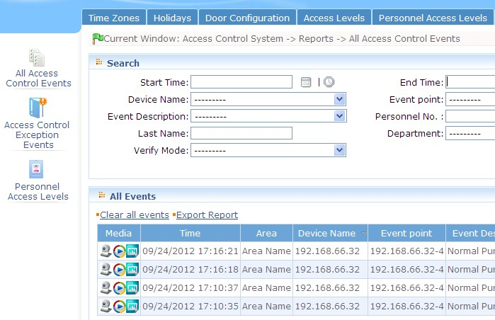

Here is the main event log (including video linkage record)

Click the left camera small ICONS, can to video server video linkage video playback. Right-click the camera small icon, click on the pop-up box "is derived from the video server" can video from the video server export to the client, export file default on C: \ OCXDownloadFiles path.
When the user opens the [real-time monitoring] page or the [access control parameters] page [set is on real-time monitoring]is set to [Yes] Then when the a video linkage video event occurs, the background will be automatically recording or capture images, the relevant documents are saved directly to the server has been set path, Will be displayed when the video after the completion of the report about the the section video linkage event of video file icon and capture file icon, click on the icon to download the appropriate file To the local.